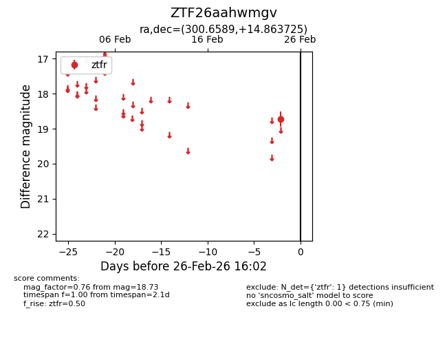
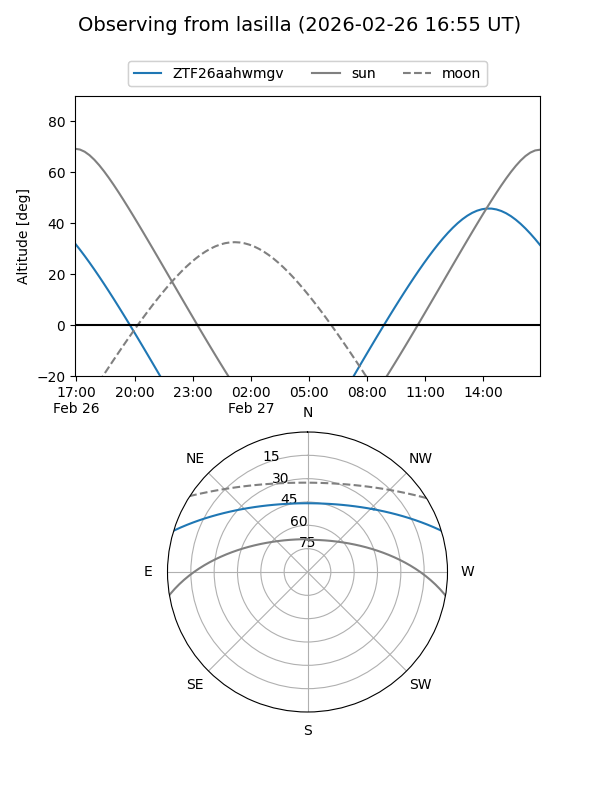
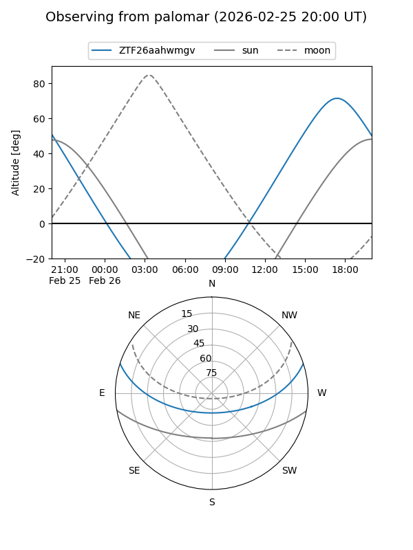

ZTF26aahwmgv
Target ZTF26aahwmgv at 2026-02-26 16:03
Aliases and brokers:
FINK: link
Lasair: link
ALeRCE: link
alt names
ZTF26aahwmgv (ztf,fink_ztf)
Coordinates:
equatorial (ra, dec) = 300.6589,+14.86373
equatorial (HMS+DMS) = 20:02:38.13,+14:51:49.41
galactic (l, b) = (54.4599,-8.39423)
Flags:
Photometry:
last ztfr=18.73
1 ztfr detections
Lightcurve

Visibility


Additional plots